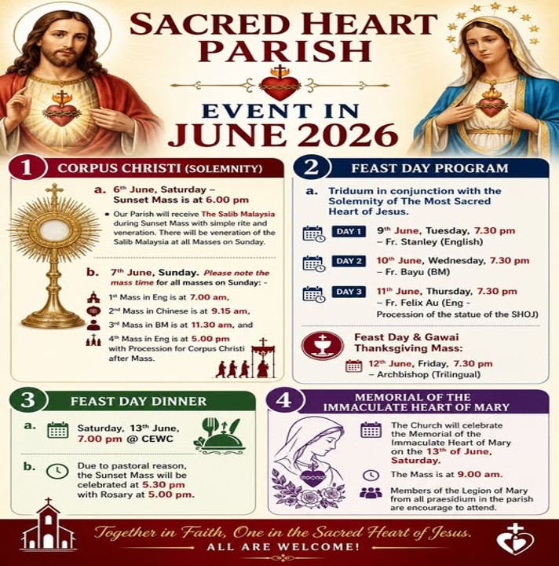
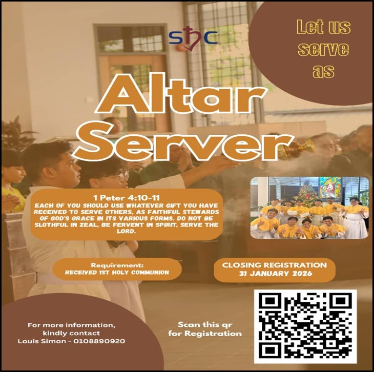
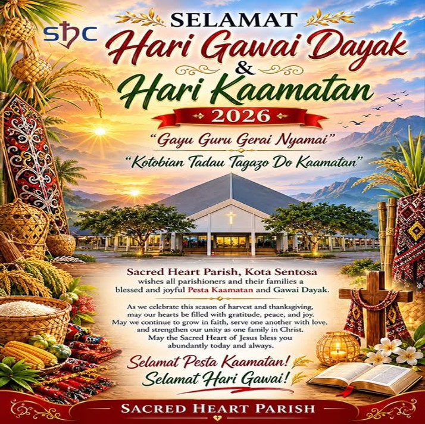
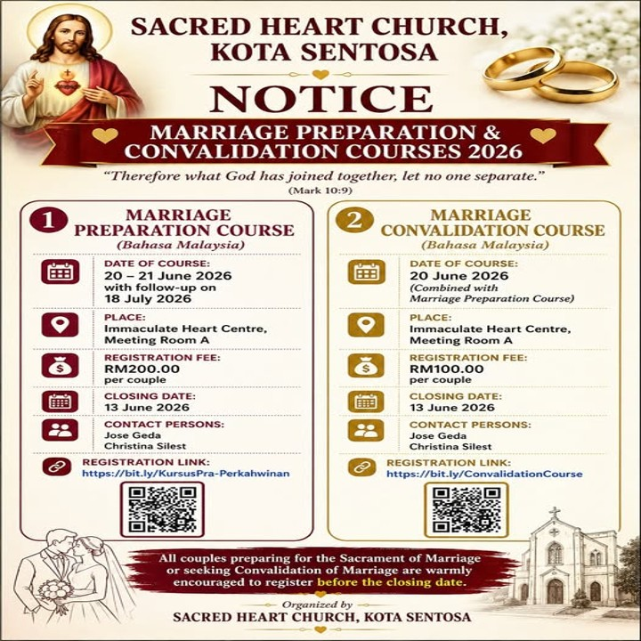
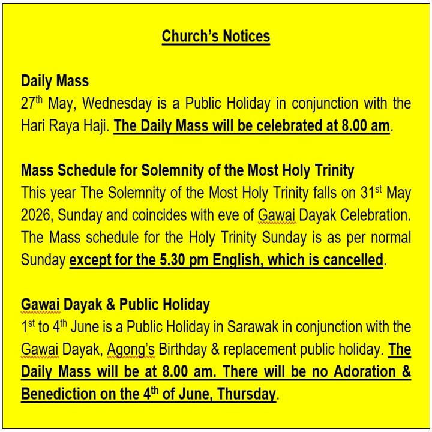
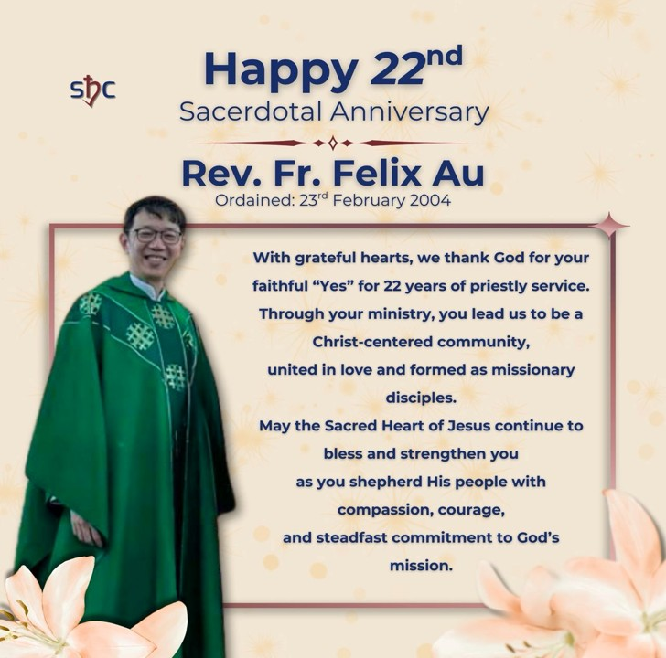

Sacred Heart Church · Kota Sentosa
Life in our parish.
Faith in our community.
Stay connected with parish announcements, upcoming events, and moments from our community.
Read Latest NoticesRead our latest weekly announcements and parish updates.
St Mark's Church is organizing a lucky draw to be held on 24th January 2027 to raise funds for its ongoing extension project. There are many attractive prizes to be won, with a Perodua Bezza 1.0G (A) as the grand prize. Tickets are available at the church foyer for RM10 each, or RM100 for a booklet of ten. The deadline to return the lucky draw ticket counterfoils and money to St Mark's Catholic Church office is 17th January 2027.
All are invited to celebrate the Kuching Archdiocese 50th Anniversary Holy Mass and Eucharistic Procession on 18th Oct 2026 at 4.00 pm at St. Joseph Cathedral.
CHOICE Kuching celebrates its 40th Anniversary this year! A Thanksgiving Mass, held together with the Opening Mass of the CHOICE National Conference Malaysia 2026, will be celebrated on Friday, 23rd October 2026, 4.30 pm at St Peter’s Church, Padungan, Kuching. The 40th Anniversary Gala Dinner will be held on Saturday, 24th October 2026, 5.30 pm at Li Garden Restaurant, CityONE Megamall, Kuching. Ticket for the Gala Dinner is RM88 per person. For enquiries, please contact Irene Kuek at 016-870 982.
Sacred Heart Church will be celebrating a special Mass for students sitting for school and public examinations on Friday. 9th October at 7.30 pm. Parents and teachers are also invited to come pray for our children.
Limited blessed candles priced at RM10 each are available for sale while stocks last. You may place your order through the link given and collect it a week before All Soul’s Day or leave it in the Church to be lighted during Mass every Friday and weekend. Payment can be made through online transfer or Pay Global (Sarawak Pay).
During the month of November, when the Church prays for the faithful departed, you are invited to request prayers for deceased family members and friends. We kindly encourage you to support our parish by offering love donations along with your prayer requests. The names you provide will be inscribed in our Book of Remembrance and will be prayed for during Masses celebrated at Sacred Heart Church throughout November. Request and love offering may be made through the link given OR by completing the request form with the relevant details.
Moments of faith, fellowship, and service in our community.





